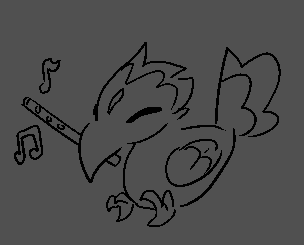
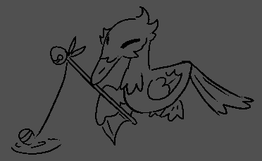
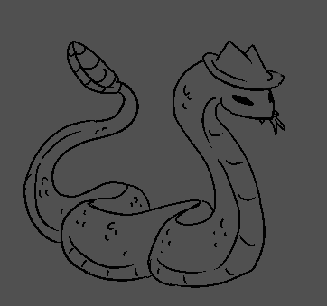
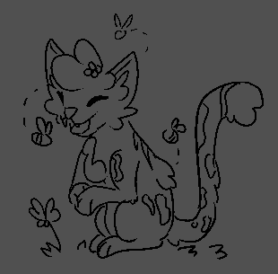
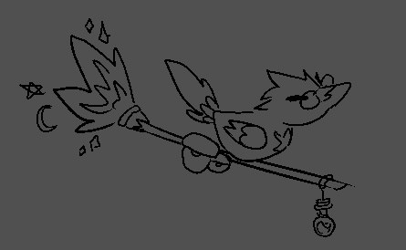
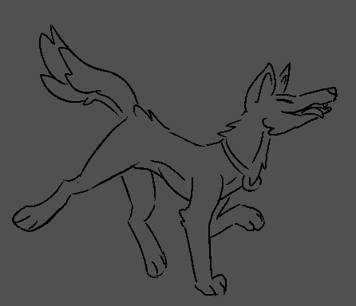
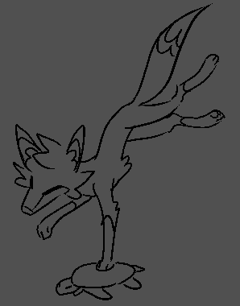

Familiars

The familliar Birbert is a toucan who plays music, his parents are Kaz and Mk. Birbert was the first familliar(of the group of familliars) on the content of iteon.

Originating
Simon is the seagull familliar, his parents are Kai and Nachos. Simon has one life remaining because Mk accidentally killed him. Simon was the second familiar (of the group) to arrive on the contenent of iteon.

from
Fang is a rattlesnake familliar, fangs parents are Nerii and Libra. Fang is on two lives but recently both of those lives became endangered when someone named aurora wanted to trade fang for one of the god weapons.
 the
the
Charlie is a slime familliar, we’s parents are Nachos and Enderia. Charlie is a lot of souls combined into one being leading to we being sparatic at times. Charlie can cook quite well and even taught tango how to cook.

grounds
Leo is a snow Leapord familliar her parents are Lexi and Kit, she has one life left due to an unfortunate day where she was killed, this has left her to be incredibly anxious around other people only Lexi, Kit, and Nachos can even get close to her

of
Crowley is the crow familliar their parent is Raptor(Used to be Sunny and Ben), they seem to be the familiar that knows the most (or just the familliar that likes to tell us the most) they like doing rituals and even died in a ritual at some point.
the

Tango is a wolf familliar, his parents are Zen and Balter. Tango lives in a cave close to a river, tango often cooks and doesn’t like water all that much.
Ancient

Voxin is the fox familliar their parent is Clover. Voxin is very good at illusions they can make themselves seem as something their not, even a Human.
City

Nibbles is the cat familliar his parent is Nachos. Nibbles is one of two stray familliars, he wasn’t given a parent like the rest. Nibbles likes skulk and seems to have memory problems? Truly what an odd familliar